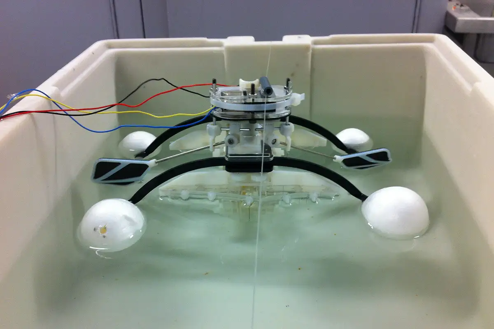

Datos curiosos sobre la Robótica
Te sorprenderán los siguientes datos
- Durante el Renacimiento, el famoso artista Leonardo da Vinci diseñó algunos bocetos de una máquina acorazada con forma humanoide. Una versión en miniatura, y más funcional, ha sido construida por un científico de la NASA para ayudar a la futura colonización en Marte.
- El Bristol Robotics Laboratory desarrolló una idea muy interesante: robots que se agenciaban su propio alimento. Se trata de artefactos que utilizan pilas cuyo combustible proviene de bacterias presentes en manzanas podridas y moscas muertas.
- En el mundo hay más de 1 millón de robots de servicio. Más de un cuarto de ellos están en Japón. Los japoneses esperan reemplazar a más de 3,5 millones de trabajadores por robots para el año 2025.

© 2024 RoboTech Innovations. Todos los derechos reservados.